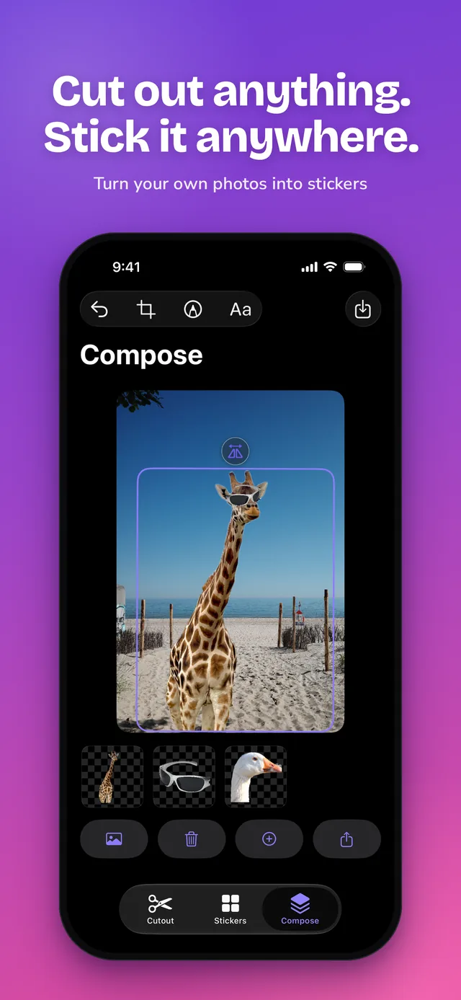
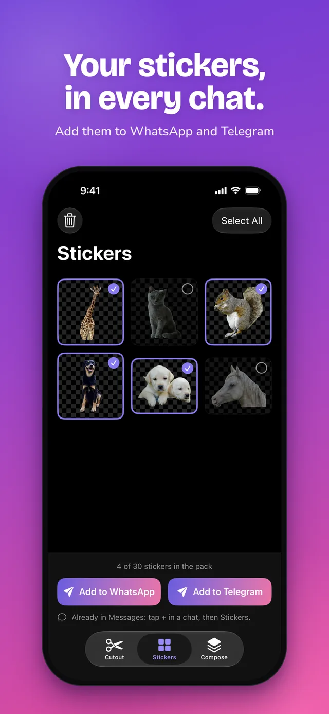
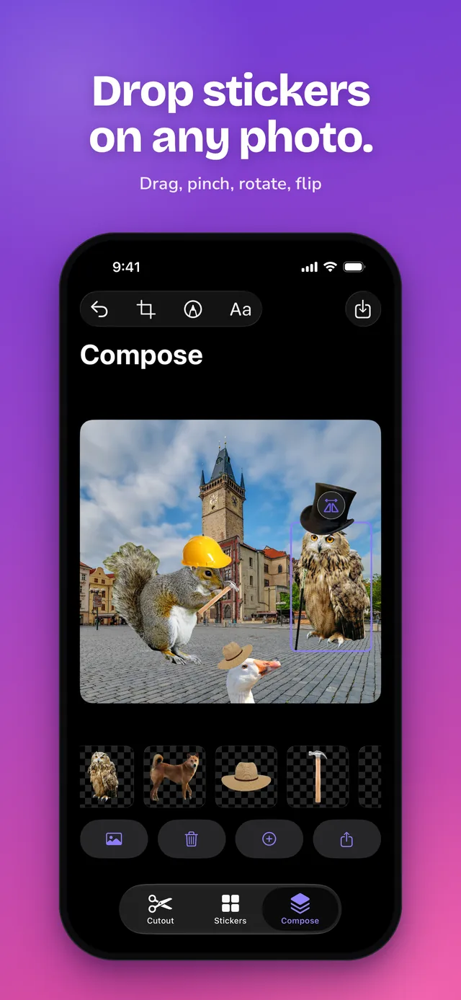
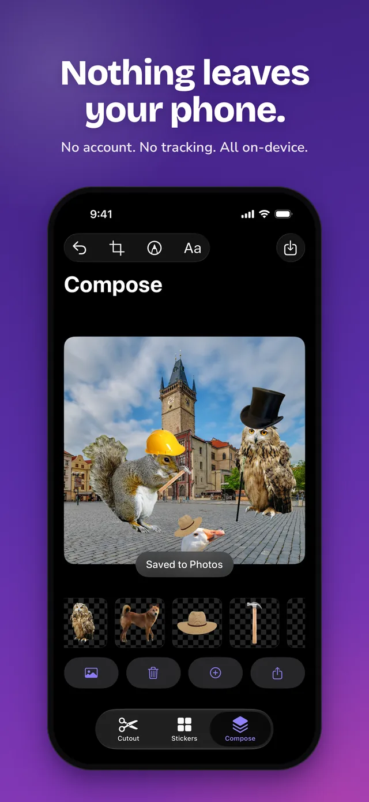
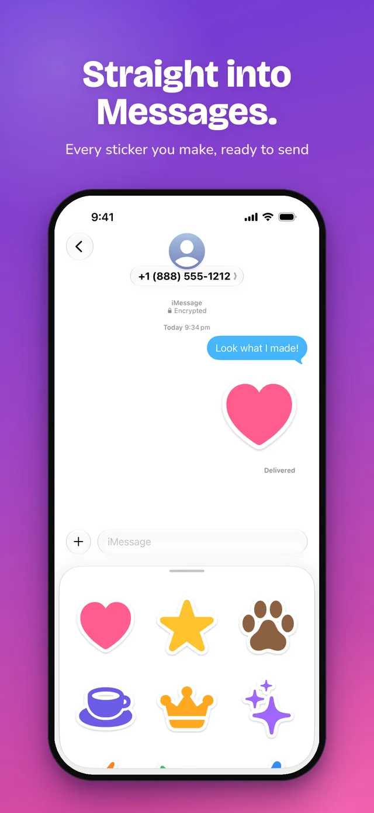

Cropcut: Sticker Maker
A completely free sticker maker and background remover for iPhone. Cut out anything, then send it as a WhatsApp or Telegram sticker pack or straight from the iMessage sticker drawer. No ads, no subscription, no account, no watermark. Everything runs on your device.
Download free on the App Store
- 100% free, no Pro tier
- No ads
- No account
- No watermark
- Works offline, on-device
- 31 languages
What Cropcut does
Cut out anything
Tap Remove Background for an instant automatic cutout. If auto-detection grabs the wrong thing, use Trace, a finger-drawn lasso: draw roughly around your subject and Cropcut snaps the path to the edges. Tidy up with the eraser.
Keep stickers, use them anywhere
Every cutout goes into Cropcut's sticker tray and is saved to Photos as a transparent PNG, so it works in iMessage, WhatsApp, Notes, Keynote, or any other app.
Compose
Open any photo, drop stickers onto it, drag, pinch and rotate, add text or freehand markup, then save or share. Good for memes, scrapbook pages, birthday cards and product mock-ups.
Send it as a pack
In Cropcut 1.2, pick 1 to 30 stickers and tap Add to WhatsApp to create a reusable WhatsApp sticker pack, or Add to Telegram for a Telegram pack. Stickers sent to WhatsApp or Telegram get the classic white die-cut outline automatically. For iMessage there is nothing to export: every sticker you make appears in the Messages sticker drawer (tap + in a chat, then Stickers, then Cropcut).
See it
Screenshots from Cropcut 1.2. Swipe sideways.








Who it's for
- People making WhatsApp and iMessage stickers of their friends, pets and kids.
- Journalers and scrapbookers who want clean cutouts without a subscription.
- Anyone making memes or collages on their phone.
- Small sellers who need a quick product cutout with no watermark.
- Parents and teachers who want an editor that doesn't upload children's photos anywhere.
How Cropcut compares
Cropcut and the iPhone's built-in Add Sticker
iOS can lift a subject out of a photo and turn it into a sticker, and for simple, well-lit photos that's a fine place to start. Cropcut is for the cases where it isn't enough: when auto-detection picks the wrong thing and you need to trace it yourself, when you want to erase a stray edge, when you want the cutout as a PNG file you can use outside Messages, or when you want to build a scene by placing stickers and text onto another photo.
Cropcut and other sticker apps
Most sticker and background-remover apps are free to download but show ads, charge a subscription for the useful parts, or need an account. Cropcut has none of those. The trade-off is scope: Cropcut makes still stickers from photos and composes them. It does not make animated stickers and it is not a full photo editor.
| Cropcut | Sticker Maker Studio | StickerHub | Sticker.ly | Photoroom | |
|---|---|---|---|---|---|
| Price | Free, no Pro tier | Free | Free + subscription | Free + PLUS from US$7.99/month | Free tier + from US$12.99/month |
| Ads in the free version | None | Yes | Yes | Yes | None reported |
| Watermark on free exports | Never | Not stated | Not stated | Not stated | No |
| Account required | No | Not stated | Not stated | Optional | Yes |
| Where processing happens | On your iPhone, no network requests | Not stated | Not stated | Cloud for some AI features | Cloud |
| Manual trace with edge snapping | Yes | Not stated | Not stated | Not stated | Not stated |
| Animated stickers | No | Yes | Yes | Yes | No |
Checked against each app's US App Store listing and published documentation on 4 November 2026. "Not stated" means the app's own listing and documentation do not say either way. Prices and features change; check each app's listing for current terms.
Frequently asked
Is it really free? Yes. There is no Pro tier, no subscription, no in-app purchases, no ads, no watermark and no daily limit.
Does Cropcut add a watermark? No. Stickers and compositions are saved as clean transparent PNGs.
Does Cropcut upload my photos? No. Cropcut has no server and no account. Photos never leave your device unless you share them yourself. See the privacy policy.
How is this different from the iPhone's built-in Add Sticker? Cropcut adds manual tracing with edge snapping, an eraser, a sticker tray that saves cutouts as PNG files, and a Compose mode for placing stickers and text onto other photos. See the comparison above.
How do I add Cropcut stickers to WhatsApp? Open the Stickers tab, pick 1 to 30 stickers, and tap Add to WhatsApp. WhatsApp opens with a new pack called "Cropcut Stickers", which you can rename there. Telegram works the same way with Add to Telegram. (Cropcut 1.2 or later.)
How do I use Cropcut stickers in iMessage? Nothing to set up. Open any conversation in Messages, tap +, then Stickers, then Cropcut. Every sticker you have made in the app is there, three to a row.
Does Cropcut make animated stickers? No. Cropcut makes still stickers from photos. If you need animated or video stickers, Sticker Maker Studio, StickerHub and Sticker.ly all do that.
Remove Background grabbed the wrong thing. Use Trace instead, which works like a lasso: draw roughly around the part you want and Cropcut snaps the path to the edges. Crop first if the subject is small in the frame.
Where do my stickers go? Into the sticker tray inside Cropcut, and into your Photos library as a transparent PNG.
How do I put a sticker on another photo? Open Compose, pick a photo, then tap a sticker in the tray. Drag to move, pinch to resize, twist to rotate. Add text or draw on top, then save or share.
Cropcut can't see my photos. Go to Settings > Privacy & Security > Photos > Cropcut and allow access to all photos or selected photos.
What languages does it support? The app is in 31 languages, including English, Spanish, Portuguese, French, German, Japanese, Korean, Chinese, Arabic, Hindi, Thai, Vietnamese, Ukrainian and Turkish, and is on the App Store in 175 countries.
Is this the same as the CropCut video editor? No. Cropcut: Sticker Maker is an independent iPhone sticker maker and background remover by a solo developer. It is not related to any CropCut video-editing app, and it is not CapCut.
Contact
Cropcut is made by one independent developer. Found a bug, or have an idea? Email adles4@icloud.com. Every message is read.
Cropcut on the App Store · Privacy policy · GitHub
Cropcut is an independent app and is not affiliated with Apple Inc., Cricut, CapCut, WhatsApp, Telegram, or any other company or app mentioned. Other apps' names are used only to compare features.